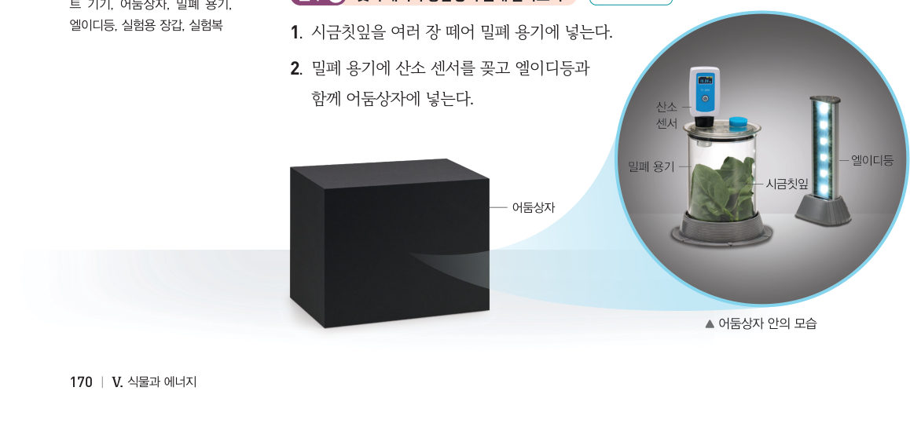
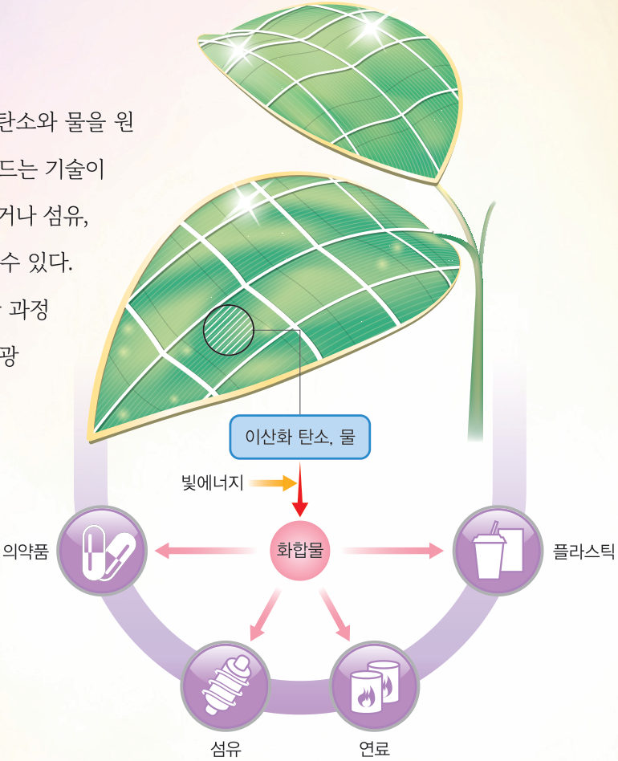

“아, 힘들다.” 가시박에 뒤덮인 나무가 잘 자랄 수 없는 까닭은 무엇일까? 가상 산소 센서와 잎 조각 띄우기 실험으로 빛의 세기의 영향을 확인하고, 스마트팜 조절판으로 광합성량을 최대로 만들어 보자.
🎯 이 단원을 배우면 — 광합성에 영향을 미치는 환경요인을 설명할 수 있다.
탐구 · 변인을 포함하여 탐구 설계 및 수행하기환경요인과 광합성의 관계 탐구하기 170~171쪽
식물이 잘 자라려면 광합성이 활발하게 일어나야 한다. 광합성은 빛의 세기, 이산화 탄소의 농도, 온도 등과 같은 환경요인의 영향을 받는다.

170쪽어둠상자 안 — 산소 센서, 밀폐 용기, 엘이디등, 시금칫잎
시금칫잎을 밀폐 용기에 넣고 산소 센서를 꽂아 엘이디등과 함께 어둠상자에 넣는다.
엘이디등을 가장 약하게 켰을 때 일정 시간 동안의 산소 농도를 측정한다.
환기한 뒤 중간 세기, 가장 센 빛으로 각각 측정한다. (측정 시간은 같게!)
가상 산소 센서빛의 세기를 바꾸어 측정하기
1산소 농도를 측정하는 까닭은 광합성 과정에서 가 발생하기 때문이다. 일정 시간 동안 산소 농도가 가장 빠르게 증가한 것은 일 때이다.
탐구 Ⓑ이산화 탄소의 농도, 온도와 광합성의 관계를 알아보는 실험 설계하기 171쪽
알아보고 싶은 환경요인을 정하고 가설과 실험 조건을 설계해 보자. (탐구 Ⓐ의 준비물을 참고하고, 더 필요한 준비물은 스마트 기기로 검색해요.)
1탐구 설계 ‘온도가 높을수록 광합성이 활발할 것이다’라는 가설을 확인하려면?
다르게 해야 할 조건
같게 해야 할 조건
💬이산화 탄소의 농도와 광합성의 관계를 알아보는 실험 방법을 설계해 보자.
다르게 해 보기빛의 세기가 광합성에 미치는 영향 알아보기 — 잎 조각 띄우기 171쪽
주사기에 시금칫잎 조각 5 개와 1 % 탄산수소 나트륨 수용액을 넣는다.
피스톤을 당겨 잎 조각 속 공기를 뺀 뒤 수용액이 담긴 비커에 넣는다(잎 조각이 가라앉음).
엘이디등 1 개를 켜서 잎 조각이 모두 떠오르는 시간을 측정하고, 켜진 개수를 늘리면서 반복한다.
가상 잎 조각 실험
1엘이디등의 개수가 많을수록(빛이 셀수록) 잎 조각이 모두 떠오르는 시간이 . 잎 조각이 떠오르는 까닭은 광합성으로 생긴 가 잎 조각 속에 모이기 때문이다.
교과서광합성에 영향을 미치는 환경요인 172쪽
일정 시간 동안의 산소 농도 변화는 일정 시간 동안 식물의 광합성량을 뜻한다. 광합성량은 빛의 세기가 셀수록 증가하며, 빛의 세기가 어느 정도 이상 세지면 더 이상 증가하지 않는다. 광합성량은 이산화 탄소의 농도가 높을수록 증가하며, 어느 정도 이상 높아지면 더 이상 증가하지 않는다. 광합성량은 온도가 높을수록 증가하며, 일정 온도 이상에서는 급격하게 감소한다. 광합성은 환경요인이 모두 알맞게 유지될 때 활발하게 일어날 수 있다.
스마트팜 조절판 · 움직이는 그림 5-2광합성량을 최대로!
빛의 세기, 이산화 탄소 농도, 온도를 조절해 광합성량을 최대로 만들어 보자. 세 그래프의 점이 지금 조건을 나타내요.
광합성량 (최대 100)-
가장 부족한 요인-
1광합성량은 온도가 증가하다가 일정 온도 이상에서는 . 빛의 세기가 어느 정도 이상 세지면 광합성량은 .
🧩 첫 번째 블록 · 힌트 조각 2 (172쪽)
광합성에 영향을 미치는 환경요인에는 빛의 세기, 이산화 탄소의 농도, ( ) 등이 있다.
스스로 확인하기170쪽 학습 목표를 달성했는지 확인해 보자 172쪽
1개념 확인 광합성량은 이산화 탄소의 농도가 높을수록 ( )하며, 어느 정도 이상 높아지면 더 이상 증가하지 않는다.
2사고력 흐리거나 비가 오는 날이 많으면 농작물의 생산량이 줄어드는 까닭을 광합성에 영향을 미치는 환경요인과 관련지어 설명해 보자.
3가시박에 뒤덮인 나무가 잘 자랄 수 없는 까닭을 써 보자.
과학이 톡자연에서 배운 친환경 에너지 기술, 인공 광합성 173쪽

173쪽인공 광합성의 활용
인공 광합성은 식물의 광합성을 모방하여 이산화 탄소와 물을 원료로 에탄올, 메탄올, 일산화 탄소와 같은 화합물을 만드는 기술이다. 화석 연료 대신 이산화 탄소를 사용하여 화합물을 생산하기 때문에 생산 과정에서 오염 물질이 발생하지 않는다. 현재 경제성이 낮고 기술적인 한계가 있어 계속 연구 중이다.
💬진로와 직업 대체 에너지 개발 연구원이 하는 일을 찾아보고, 대체 에너지를 개발할 때 고려할 점을 써 보자.
5분 테스트광합성에 영향을 미치는 환경요인
1빛의 세기를 가장 약한 빛, 중간 세기, 가장 센 빛으로 정하고 일정 시간 동안 산소 농도를 측정한 실험(빛을 바꾸기 전 환기함)에 대한 설명으로 옳은 것을 모두 고르시오.
2이산화 탄소의 농도가 높을수록 광합성량이 한다. 빛의 세기가 수록 광합성량이 증가하다가 일정 세기 이상이 되면 일정하게 유지된다. 광합성량은 온도가 수록 증가한다. 광합성에 영향을 미치는 환경요인에는 빛의 세기, 의 농도, 온도가 있다.
6그래프 A, B에 해당하는 환경요인을 고르시오.
A
B
스스로 정리하기1. 광합성과 에너지 · 첫 번째 블록 찾기 174쪽
2광합성에 영향을 미치는 환경요인
· — 증가하다 어느 정도 이상이면 더 이상 증가하지 않음 — 증가하다 일정 온도 이상에서 급격하게 감소
🧩 첫 번째 블록 찾기 · 스마트팜에서 식물이 광합성을 활발하게 하려면 환경을 어떻게 조절해야 할까?
① 식물은 빛에너지, 이산화 탄소, 물을 이용하여 포도당을 만들고, 이 과정에서 산소가 발생한다. (169쪽) ② 광합성에 영향을 미치는 환경요인에는 빛의 세기, 이산화 탄소의 농도, 온도 등이 있다. (172쪽)
두 조각을 모아 첫 번째 블록 질문에 답해 보자. 블록 찾기 성공!
평가 기준
스스로 평가
지식·이해 광합성 과정과 환경요인과 광합성의 관계를 설명할 수 있는가?
과정·기능 환경요인과 광합성의 관계를 탐구하는 실험을 설계할 수 있는가?
가치·태도 친구의 의견을 경청하며 실험 계획을 보완했는가?
제출학생 정보 · 제출하기
모든 활동을 마친 뒤 제출하면 전체가 한 번에 채점되고 피드백이 나타나요. 답안은 선생님 스프레드시트(중2 탭)에 기록돼요.